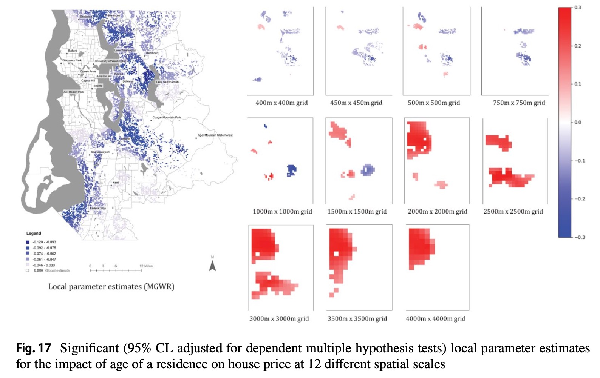

국지적 모형에의 함의점 도출
2026-04-01
현상 및 기존 연구의 한계

현상 및 기존 연구의 한계
본 연구의 접근
| # | 구분 | 연구문제 | 가설 |
|---|---|---|---|
| RQ1 | 발생 조건 | Z의 공간적 자기상관(ρₛ)과 X-Z 상관(α)이 역설 발생에 미치는 영향 | ρₛ↑, α↑ → 역설 강해짐 |
| RQ2 | GWR 역할 | Z가 공간적으로 군집 시, GWR 추정치는? | OLS보다 β_true에 근접 |
| RQ3 | SGWR 역할 | Z 군집 약해도 W가 Z의 대리변수일 때 SGWR은? | GWR보다도 β_true에 근접 |
| RQ4 | 실증 | 출산력 데이터의 역전이 RQ1–3 조건에 해당? | — |
4단계 DGP
\[Y_i = \beta_{true} \times X_i + \gamma \times Z_i + \epsilon_i\]
Z 생성 방법 (택일):
\[X_i = \alpha \times Z_i + \eta_i\]
\[W_i = \delta \times Z_i + \nu_i\]
| \(\rho_s\) | \(\alpha\) | \(\delta\) | 예상 결과 |
|---|---|---|---|
| 높음 | 높음 | — | GWR이 역설 완화 |
| 낮음 | 높음 | 낮음 | GWR, SGWR 모두 완화 실패 |
| 낮음 | 높음 | 높음 | SGWR만 역설 완화 |
| — | 낮음 | — | 역설 발생 안 함 |
\[\text{Bias} = \frac{1}{n}\sum_i |\hat{\beta}_i - \beta_{true}|\]
\[\text{Bias Reduction} = \frac{|\widehat{\beta_{OLS} - \beta_{true}}| - |\widehat{\beta_{local} - \beta_{true}}|}{|\widehat{\beta_{OLS} - \beta_{true}}|}\]
부호 역전 비율: \(\hat{\beta}\)의 부호가 \(\widehat{\beta_{OLS}}\)와 반대인 관측치 비율
관측치 6개, 집단 2개 (맑은 도시 A, 흐린 도시 B)
| 관측치 | 도시 | Z (태양노출) | X (운동) | Y (피부암) |
|---|---|---|---|---|
| 1 | A | 10 | 8 | 10 |
| 2 | A | 10 | 6 | 10 |
| 3 | A | 10 | 4 | 10 |
| 4 | B | 2 | 3 | 2 |
| 5 | B | 2 | 1 | 2 |
| 6 | B | 2 | 2 | 2 |
DGP: Y = 0*X + 1*Z + eps (\(\beta_{true}=0\), 운동은 피부암과 무관)
30×30 격자, \(\beta_{true}=0\), \(\gamma=5\), 고정 대역폭 \(h_{bw}=2\)
| 조건 | \(h\) | \(\alpha\) | \(\delta\) | OLS | GWR 평균 | GWR Bias↓ | SGWR 평균 | SGWR Bias↓ |
|---|---|---|---|---|---|---|---|---|
| Cond1 | 6.0 | 5.0 | — | +0.994 | +0.971 | +2.4% | +0.995 | −0.0% |
| Cond2 | 0.5 | 5.0 | 0.5 | +0.995 | +0.995 | 0.0% | +0.987 | +0.8% |
| Cond3 | 0.5 | 5.0 | 5.0 | +1.001 | +1.001 | 0.0% | +0.990 | +1.2% |
| Cond4 | 2.0 | 0.0 | — | −0.483 | −0.424 | — | −0.361 | — |
Note
Cond1·3에서 예상 방향의 편향 감소 확인 (개선 폭 미미) · Cond4(\(\alpha=0\)): OLS 자체가 노이즈에 의한 허위 추정치, GWR/SGWR에서 부호 역전 양상 · 대역폭 설정 및 DGP 조건 추가 검토 필요
| \(\rho_s\) | \(\alpha\) | \(\delta\) | 예상 결과 |
|---|---|---|---|
| 높음 | 높음 | — | GWR이 역설 완화 |
| 낮음 | 높음 | 낮음 | GWR, SGWR 모두 완화 실패 |
| 낮음 | 높음 | 높음 | SGWR만 역설 완화 |
| — | 낮음 | — | 역설 발생 안 함 |
Simpson’s Paradox in Spatial Data Analysis